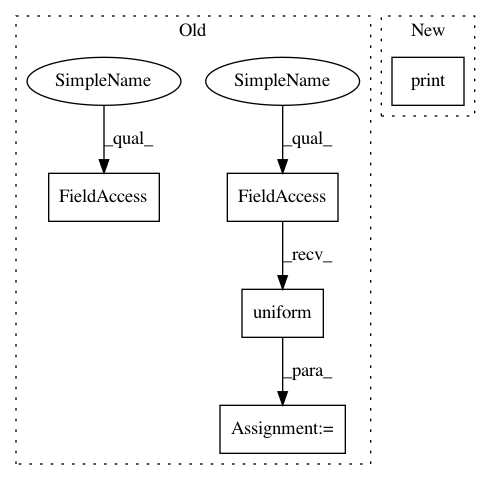

3c4f0ac609b5a7b1f55db0f3dd5d25d366416f70,tests/auto/test_graph_model.py,TestGraph,test_2o_1i_sample_weights,#TestGraph#,133
Before Change
weights1 = np.random.uniform(size=y_train.shape[0])
weights2 = np.random.uniform(size=y2_train.shape[0])
weights1_test = np.random.uniform(size=y_test.shape[0])
weights2_test = np.random.uniform(size=y2_test.shape[0])
graph.compile("rmsprop", {"output1": "mse", "output2": "mse"})
history = graph.fit({"input1": X_train, "output1": y_train, "output2": y2_train}, nb_epoch=10,
After Change
sample_weight={"output1": weights1, "output2": weights2})
loss = graph.evaluate({"input1": X_train, "output1": y_train, "output2": y2_train},
sample_weight={"output1": weights1, "output2": weights2})
print(loss)
def test_recursive(self):
print("test layer-like API")
In pattern: SUPERPATTERN
Frequency: 3
Non-data size: 5
Instances
Project Name: keras-team/keras
Commit Name: 3c4f0ac609b5a7b1f55db0f3dd5d25d366416f70
Time: 2015-08-26
Author: francois.chollet@gmail.com
File Name: tests/auto/test_graph_model.py
Class Name: TestGraph
Method Name: test_2o_1i_sample_weights
Project Name: keras-team/keras
Commit Name: 3c4f0ac609b5a7b1f55db0f3dd5d25d366416f70
Time: 2015-08-26
Author: francois.chollet@gmail.com
File Name: tests/auto/test_graph_model.py
Class Name: TestGraph
Method Name: test_2o_1i_sample_weights
Project Name: analysiscenter/batchflow
Commit Name: 77ce08e78a831a94e9f33b1e32eb265e495dd9c4
Time: 2017-12-18
Author: g.ivanov@analysiscenter.ru
File Name: dataset/batch_image.py
Class Name: BaseImagesBatch
Method Name: scale
Project Name: scipy/scipy
Commit Name: 766e25c3e0adc86e3061cd45c983a727d3e668e1
Time: 2013-05-08
Author: argriffi@ncsu.edu
File Name: scipy/sparse/linalg/benchmarks/bench_expm_multiply.py
Class Name: BenchmarkExpmMultiply
Method Name: bench_expm_multiply